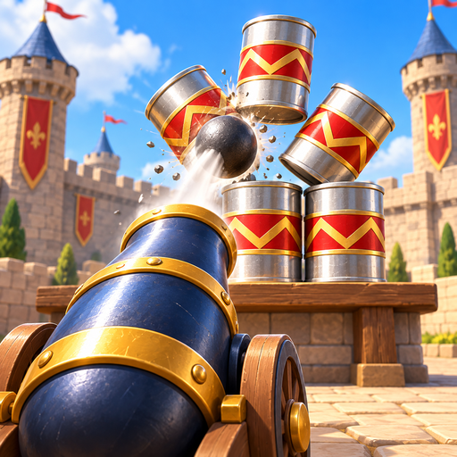
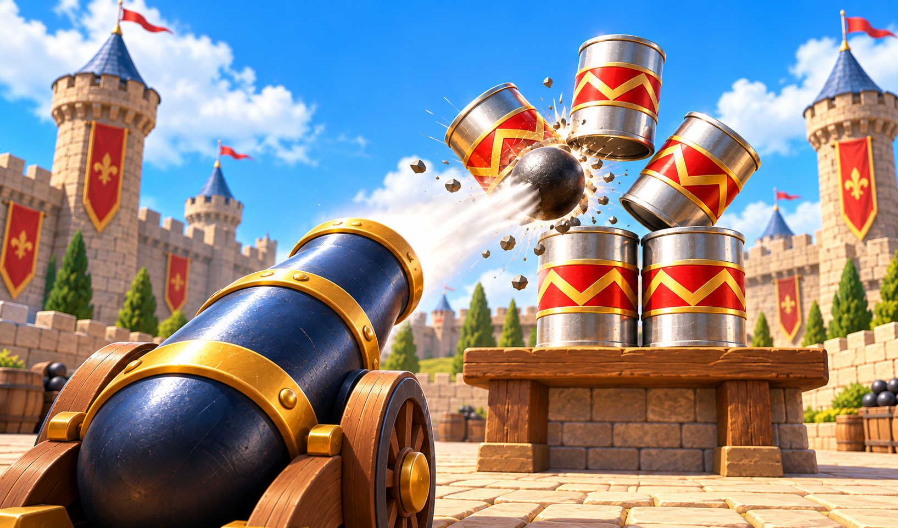

Cannon Topple
Fire the cannon and topple every target before your shots run out.

About the game
Cannon Topple is a game of cannon shots against structures made from targets. Choose a point on the board and tap it to fire one ball in that direction. Your shot supply is limited, so inspect the arrangement before each tap and decide where to aim next.
The goal is to remove every target. Destroyed objects count toward progress; where the level allows it, targets knocked out of bounds count too. After an impact, look at the remaining structure and choose another point. Completing the full objective wins the level. If you use the last shot while targets remain, the attempt ends in a loss. Plan each hit around the objects still standing and use the remaining shots to finish clearing the structure.
How to play
- 1.
- Check the targets and your remaining shots.
- 2.
- Tap the point you want to shoot at; one tap fires one shot.
- 3.
- Choose the next point based on the targets that remain.
- 4.
- Remove every target before you run out of shots.